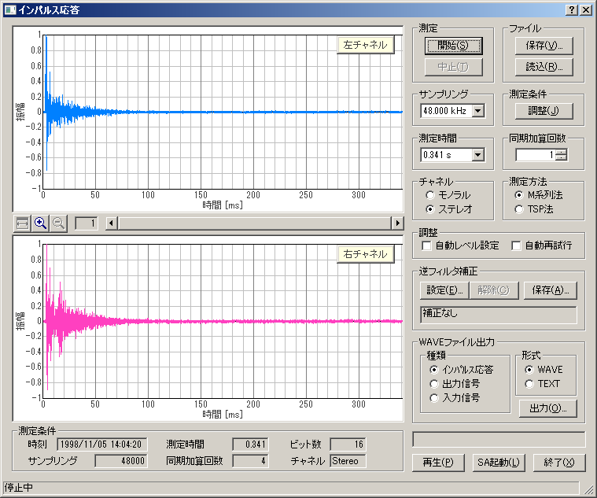

DSSF3 > RA > インパルス応答測定 > 測定ガイド
動作テスト例
開始ボタンをクリックすると測定信号が出力され、インパルス応答が測定されます。 下の例は入力装置をWAVE（ドライバの種類によって名称はMIXERなどと異なる場合があります）として 測定したインパルス応答です。この場合はパソコン内部で作られた信号を外部の機材を通さずにそのまま 入力しているので、インパルス応答は短いパルスを1本だけ含み残りはほぼ一直線になるはずです。 そうならない場合は入力デバイスやボリュームコントロールの設定が間違っている可能性がありますので、 前の項目に戻ってもう一度設定を見直してください。

[再生]ボタンをクリックすると、測定されたインパルス応答を聞くことができます。実際に聞いてみることによって、波形を見るだけではわからない測定の問題点が明らかになる場合もあります。
DSSF3 > RA > インパルス応答測定 > 測定ガイド